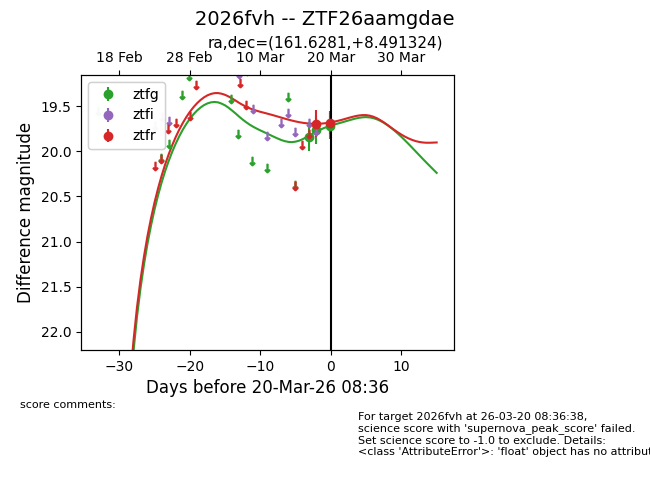
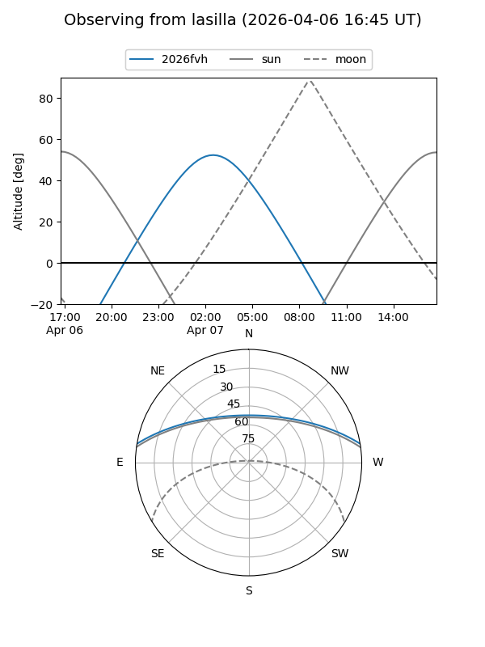
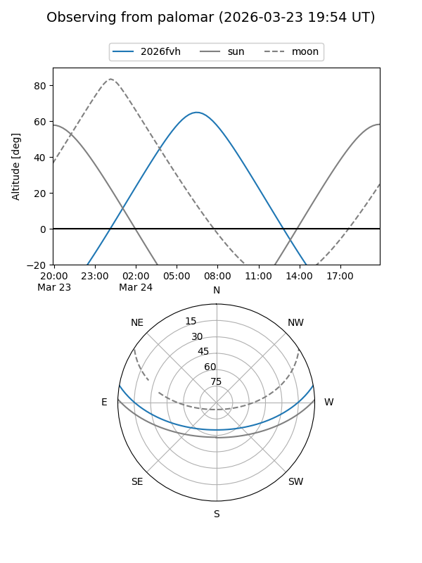
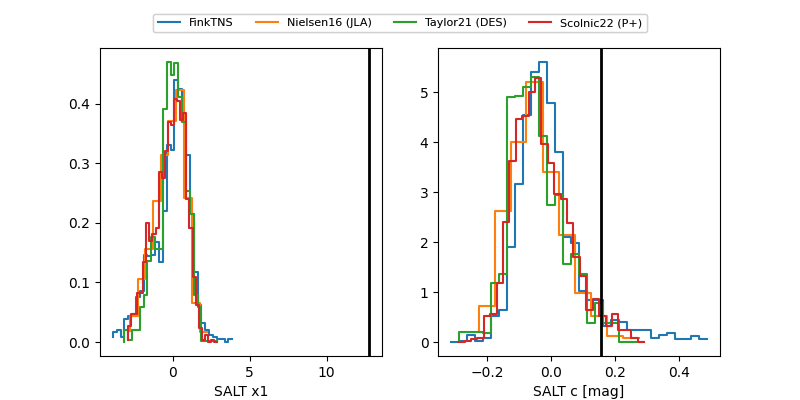

2026fvh
Target 2026fvh at 2026-03-20 08:38
Aliases and brokers:
FINK: link
Lasair: link
ALeRCE: link
TNS: link
YSE: link
alt names
ZTF26aamgdae (ztf,fink_ztf)
2026fvh (tns,yse)
Coordinates:
equatorial (ra, dec) = 161.6281,+8.49132
equatorial (HMS+DMS) = 10:46:30.75,+08:29:28.77
galactic (l, b) = (239.3007,+55.08480)
Flags:
Photometry:
last ztfg=19.72, ztfr=19.68
3 ztfg, 2 ztfr detections
Lightcurve

Visibility


Additional plots
